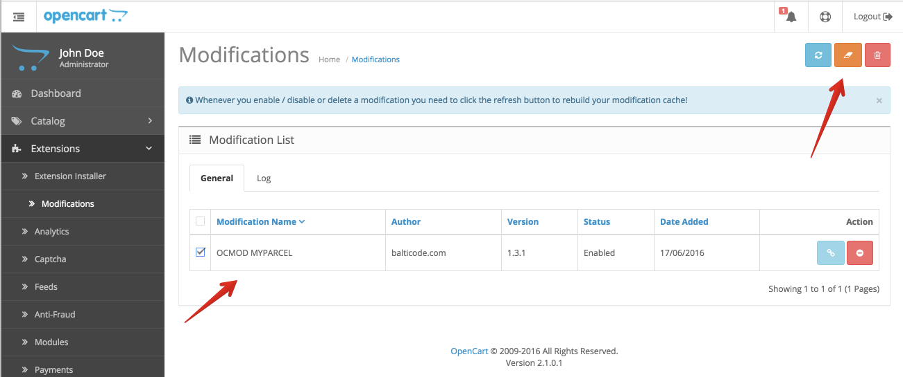
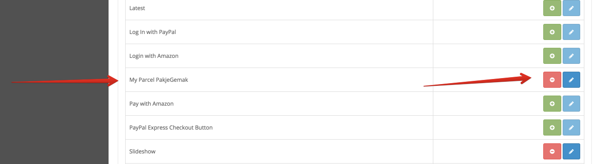
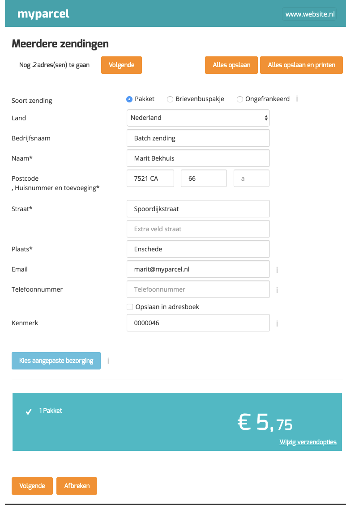

Inleiding
In deze handleiding laten we zien hoe je de MyParcel plug-in kunt installeren in jouw OpenCart
winkel. Vervolgens geven wij een instructie van het gebruik van de plug-in.
De installatie en het gebruik van de koppeling wordt je kosteloos aangeboden door MyParcel. Wij helpen je graag met vragen over het gebruik van de plug-in. Omdat OpenCart een opensource platform is kan het zijn dat de MyParcel plug-in conflicteert met reeds geïnstalleerde plug-ins.
Mocht je problemen ondervinden met de installatie, raden wij je aan contact op te nemen met jouw webbouwer.
Plug-in versie 1.1 getest op OpenCart versie 2.0
Plug-in versie 1.2 getest op OpenCart versie 2.1
Inhoud
1. Installatie van de plug-in
Dit hoofdstuk omschrijft de installatie van de MyParcel OpenCart Plug-in met gebruik van de “Extension installer”. Vanaf OpenCart 2 is het mogelijk om de extensie te installeren via de “Extension installer”.
- Download het MyParcel OpenCart Plug-in .zip bestand
- Pak het bestand ‘oc2_myparcel_v1.1.ocmod.zip’ uit
Via FTP
- Upload de bestanden die in het mapje ‘upload’ staan naar de rootdirectory van de OpenCart website
Via het CMS
- Ga naar Systeem > Settings > edit > FTP en vul hier de FTP gegevens in.
- Ga naar Extensions > Extension installer en installeer “myparcel.ocmod.xml” d.m.v. de OpenCart “Extionsion installer”.
- Ga naar Extensions > Modifications selecteer “OCMOD MYPARCEL” en druk rechtsboven op “Refresh”. 


2. Instellen PostNL afhaallocaties
Zodra je PakjeGemak inschakelt, biedt je jouw klanten tijdens het checkout proces de keus om hun pakket op een afhaallocatie van PostNL te laten bezorgen. De klant kan hiervoor zelf de gewenste locatie selecteren en het pakket zal door PostNL op deze locatie worden bezorgd. Het verwerken van deze zendingen gaat op dezelfde manier als de overige zendingen via MyParcel.
- Ga in OpenCart naar Extensions > Modules > MyParcel PakjeGemak > Edit; Als MyParcel PakjeGemak nog niet geïnstalleerd is dan moet je dat nog eerst doen.
- Vul je MyParcel Gebruikersnaam en API key (de API key kan je aanvragen via info@myparcel.nl of terugvinden via www.myparcel.nl onder Instellingen > Algemeen > APIkey) in, vink het vakje ‘Frontend plugin’ aan en klik op opslaan
- Klaar! PakjeGemak is toegevoegd aan het bestelproces van jouw webshop.

3. Gebruik van de plugin
Met de geïnstalleerde koppeling kun je voortaan vanuit jouw OpenCart back- office direct etiketten aanmaken en uitprinten. Je kunt voor een enkele zending een etiket aanmaken of meerdere orders tegelijkertijd verwerken.
Instellen MyParcel
Het is mogelijk om jouw ordernummers direct aan de zendingen te koppelen. Het ordernummer van de betreffende zending komt dan onder het eigen kenmerk te staan, zowel op het etiket als in het zendingenoverzicht van MyParcel.nl.
Je kunt deze optie activeren in jouw MyParcel.nl account. Ga hiervoor naar Instellingen > Algemeen en vink de optie ‘‘plug-in order id toevoegen voor kenmerk’’ aan.
Een etiket aanmaken per zending
- Ga naar jouw orderoverzicht (Sales > Orders) in OpenCart.
- Aan de rechterkant van deze kolom vind je de kolom ‘MyParcel labels’. Kies in deze kolom voor het pdf+ icoontje.
- Er opent nu een pop-up venster waarin de adresgegevens van jouw gekozen zending al ingevuld staan. Je kunt deze in dit venster nog controleren en zonodig aanpassen. Als het klopt kun je kiezen voor "opslaan" of "opslaan en printen" Wanneer je voor de eerste optie kiest keer je terug naar het orderoverzicht en zul je een "pdf teken" zien staan achter jouw order. Daar kun je klikken om het pdf te downloaden.

Wanneer je kiest voor "opslaan en printen" zul je nog een pop-up venster zien waarin je kunt kiezen voor A4 of A6. - Wanneer je kiest voor A4, kun je nu de printpositie kiezen. Op de gekleurde vakjes zal worden geprint. Als je bijvoorbeeld de eerste positie (linksboven) leeg laat, zal het afdrukken rechtsboven beginnen.
- Er verschijnt een pdf met daarop jouw etiket, deze kun je afdrukken.
- Als je terug gaat naar jouw orderoverzicht in OpenCart kun je via de functie ‘Track & Trace’ de status van de betreffende zending bekijken op de PostNL pagina.


Meerdere etiketten als batch verwerken
- Ga naar jouw orderoverzicht in OpenCart.
- In de kolom ‘MyParcel labels’ selecteer je in een keer alle orders waarvoor je een etiket aan wilt maken.
- Boven de kolom klik je vervolgens eerst op het pdf+ icoontje om de etiketten in MyParcel.nl te verwerken.
- Klik op OK om te bevestigen.
- Nu opent een pop-up venster waarin je de adressen kunt controleren, wanneer je direct alles wilt printen kun je klikken op "alles opslaan en printen" je kunt ook eerst met de knop "volgende" alle adressen controleren.
- Wanneer je kiest voor A4, kun je nu de printpositie kiezen. Op de gekleurde vakjes zal worden geprint. Als je bijvoorbeeld de eerste positie (linksboven) leeg laat, zal het afdrukken rechtsboven beginnen.
- Er verschijnt een pdf met daarop jouw etiket, deze kun je afdrukken.
- Als je terug gaat naar jouw orderoverzicht in OpenCart kun je via de functie ‘Track & Trace’ de status van de betreffende zending bekijken op de PostNL pagina.



4. Hulp nodig?
Indien je vragen hebt over de installatie of het gebruik van de plug-in, helpen wij je graag. Ook tips & suggesties voor verbetering van de (werking) van de plug-in, horen wij graag. Mail naar support@myparcel.nl of bel: 023 30 30 315.